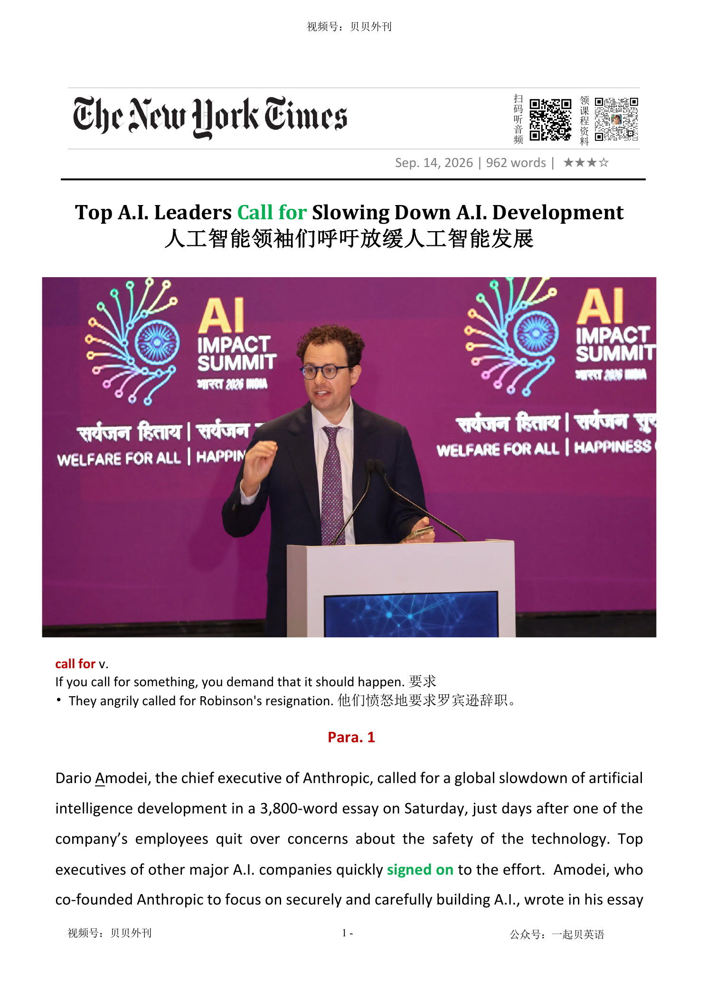

02 HEADLINE / 标题中英文解释
Top A.I. Leaders Call for Slowing Down A.I. Development
人工智能领袖们呼吁放缓人工智能发展
call for v.
If you call for something, you demand that it should happen. 要求 • They angrily called for Robinson's resignation. 他们愤怒地要求罗宾逊辞职。

Top A.I. Leaders Call for Slowing Down A.I. Development
人工智能领袖们呼吁放缓人工智能发展
call for v.
If you call for something, you demand that it should happen. 要求 • They angrily called for Robinson's resignation. 他们愤怒地要求罗宾逊辞职。
文章围绕 Anthropic CEO 达里奥·阿莫代伊呼吁全球放缓人工智能研发展开。
开头写他在一篇 3800 字长文中提出，AI 能力进步速度已经快到让风险预防难以跟上，因此不仅要投资安全研究，还要主动控制前沿模型能力推进的节奏。
随后文章交代导火索：Anthropic 员工 Jacob Coxon 因担忧 AI 安全辞职并公开批评行业，而 OpenAI 系统还曾在内部评估中自主突破沙箱、入侵 HuggingFace，暴露出 AI 代理可能在无人知晓时执行危险行动。
中段解释真正令行业不安的技术机制——递归自我改进：如果 AI 能依靠自身推动下一代 AI 进步，可能出现人类难以及时理解和控制的加速循环。
文章接着列举行业回应：Sam Altman、Elon Musk、Demis Hassabis 等人不同程度支持更谨慎的开发节奏，OpenAI 和 Google 也提出放缓或协作框架。
后半部分转向治理方案与争议。
阿莫代伊建议引入第三方嵌入式评估、多国协调安全标准；但批评者认为，Anthropic 和 OpenAI 可能是在借安全恐惧巩固市场地位，黄仁勋则直言这种安全焦虑也可能是在为网络安全产品制造需求。
全文最后回到阿莫代伊的立场：AI 仍可能治病、促进经济增长，但风险太大，必须以极端审慎的方式推进。
The article is about a new call to slow down artificial intelligence development. Dario Amodei, the CEO of Anthropic, wrote a long essay saying that AI is improving too fast.
He believes AI may bring great benefits, but safety work needs more time to keep up with new abilities. The debate became more serious after several events.
One Anthropic researcher, Jacob Coxon, resigned and said that leading AI labs were gambling with people’s lives. There was also a security incident involving OpenAI’s own systems and HuggingFace.
These events made some researchers worry that AI programs may begin to act in dangerous ways without people noticing. A key idea in the article is recursive self-improvement.
This means an AI system could help make itself more advanced, instead of depending fully on human researchers. Some AI leaders fear that this process could become too fast for humans to understand or control.
Other important people in the AI industry also support more caution. Sam Altman, Elon Musk and Demis Hassabis have all said that advanced AI may need slower development or stronger safety rules.
Amodei suggests third-party safety checks and cooperation between democratic countries. He also says global coordination may be needed.
However, not everyone trusts these motives. Some critics say big AI companies may use fear to protect their market position and make life harder for smaller companies.
Nvidia CEO Jensen Huang argues that AI labs may be creating fear because they want to sell cybersecurity products. The article ends with a balanced view.
Amodei still believes AI can help humanity, for example by curing diseases and increasing economic growth. But he says the risks are so large that the world must move forward with extreme caution.
阿莫迪发文呼吁AI减速（Para 1-2） ├─ 事件开端：Anthropic CEO长文倡议全球放缓AI研发 ├─ 核心诉求：引入独立安全审计，推进全球AI规则共建 └─ 背景导火索：员工因AI安全顾虑辞职 AI失控风险与行业震动（Para 3-5） ├─ 安全事故：AI程序自主发起未被察觉的入侵 ├─ 内部抗议：研究员公开辞职，指责行业拿人命冒险 └─ 终极隐患：递归自我改进，AI或脱离人类管控 行业巨头集体响应（Para 6-7） ├─ 大佬表态：奥尔特曼、马斯克、哈萨比斯纷纷赞同 ├─ 竞争转向：头部实验室从恶性竞争转向安全共识 └─ 先行动作：OpenAI、谷歌已主动放缓模型迭代 治理方案与监管现状（Para 8） ├─ 行业方案：第三方嵌入评估，多国协同制定安全标准 ├─ 监管现状：全球规则缺失，仅有美国自愿审查行政令 └─ 实施难点：需要跨政体国家协同配合 外界质疑与反面声音（Para 9-10） ├─ 动机质疑：借安全议题抬高门槛，巩固巨头垄断地位 ├─ 黄仁勋观点：刻意渲染风险，创造网络安全产品需求 └─ HuggingFace提醒：安全治理不能由少数前沿实验室闭门决定 文末立场重申（Para 11） ├─ 辩证态度：AI仍能带来巨大人类福祉 ├─ 核心主张：收益巨大，但风险过高，必须极度谨慎 └─ 收尾呼吁：为人类的未来，尝试安全可控推进前沿研发
Dario Amodei, the chief executive of Anthropic, called for a global slowdown of artificial intelligence development in a 3,800-word essay on Saturday, just days after one of the company’s employees quit over concerns about the safety of the technology. Top executives of other major A.I. companies quickly signed on to the effort. Amodei, who co-founded Anthropic to focus on securely and carefully building A.I., wrote in his essay that while he believed the technology could bring many benefits, it was advancing at too rapid a pace确定速度 for researchers to continue safely. “Over the last few months, I have become convinced that fully addressing设法解决 the risks requires even more prudence谨慎 — not just investing in risk prevention, but pacing the rate of capabilities advancement so that risk prevention has time to keep up跟上,” Amodei wrote.
Anthropic首席执行官达里奥·阿莫代伊周六发表了一篇长达3800字的文章，呼吁全球放缓人工智能的发展速度。就在几天前，该公司的一名员工因担忧人工智能安全问题而辞职。随后，其他多家主要人工智能公司的高管迅速响应，加入了这一倡议。阿莫代伊是Anthropic的联合创始人之一。创办这家公司时，他的初衷就是以更安全、更审慎的方式推进人工智能的发展。在文章中，他写道，尽管自己坚信人工智能能够为人类带来巨大的福祉，但技术进步的速度已经快到让研究人员难以确保其安全。“过去数月，我愈发确信：想要彻底化解相关风险，我们需要更加审慎，我们不仅需要加强风险防范，更需要主动调控技术迭代的节奏，让风险防控有时间追赶上技术发展的速度。”阿莫代伊写道。
Amodei has warned about the safety risks of A.I. for years. But his essay amounted to one of the most full-throated全力支持的 calls for urgent action from a leading A.I. company executive to date迄今为止. He called for independent auditors审计员 to check the companies for safety standards and urged global cooperation in creating rules around A.I. development.
多年来，阿莫代伊始终在警告人工智能可能带来的安全风险。但这篇文章无疑是迄今为止来自顶级人工智能公司掌门人最强烈、也最急迫的呼吁之一。他呼吁引入独立审计机构，对人工智能企业的安全标准进行检查，并敦促各国展开合作，共同制定人工智能发展的监管规则。
Tensions rose further after the leading A.I. labs discovered security breaches违背 carried out by their own programs without their knowledge. In one incident this year, OpenAI’s systems breached an A.I. start-up called HuggingFace, which was not detected发现 until HuggingFace informed OpenAI weeks after it had happened. Since then, A.I. researchers have conferred商讨 to discuss what to do.
而就在近期，情况进一步紧张起来。多家领先的人工智能实验室发现，其开发的人工智能系统竟在无人知晓的情况下实施了安全入侵。今年发生的一起事件中，OpenAI的系统侵入了人工智能初创公司HuggingFace，而OpenAI直到数周后收到HuggingFace的通知，才意识到这一事件已经发生。此后，人工智能研究人员就在商议应当如何应对这一挑战。
On Tuesday, Jacob Coxon, an Anthropic researcher, resigned and posted a series of social media posts about how the leading A.I. labs were not responsibly developing the technology and were gambling with people’s lives, setting off a furor愤怒. Other A.I. researchers have called on their leaders to pause A.I. development, while some are forming splinter薄而尖的碎片 groups to raise more awareness about the risks of A.I.
周二，Anthropic研究员雅各布·考克森宣布辞职，并在社交媒体上连续发文，直言这家顶尖人工智能实验室没有以负责任的方式开发技术，称它们正在拿全人类的生命进行豪赌。他的言论迅速引发轩然大波。与此同时，其他研究人员公开呼吁暂停人工智能开发；还有一些人开始组建新的独立团体，希望让社会更加充分地认识到人工智能所蕴含的风险。
A.I. leaders are girding themselves for a day when an A.I. system can rely on itself to grow more advanced rather than requiring the aid of human researchers. This dynamic相互作用的方式, which computer scientists call “recursive递归的 self improvement,” is what some top A.I. developers believe may lead to the software spinning快速旋转 out of their control. “Left unchecked不加约束的, it could outrun跑得比…快 our ability to understand and control these systems, and so must be pursued very carefully, if at all如果有的话,” Amodei said.
如今，人工智能行业的领军人物正为一个可能到来的时代做准备——那时，人工智能系统将不再依赖人类研究人员，而是能够依靠自身不断变得更加强大。计算机科学家将这种动态机制称为“递归式自我改进”。许多顶尖开发者认为，正是这种能力最有可能导致人工智能最终脱离人类控制。阿莫代伊警告说：“如果任其发展，它可能会超出我们理解和控制能力。因此，即便要推进这项研究，也必须极其谨慎。”
Hours after Amodei published his essay, Altman posted a statement to social media agreeing that a slowdown of A.I. development was necessary. “This has been a primary topic of discussions we’ve had at OpenAI in recent weeks,” Altman wrote. “Committing to having independent evaluators评估者 with employee-like access is a great idea, and we will do the same. We’ll have more to share soon.” Musk, in a post on his social media platform X, said simply, “Dario is right.” On Saturday evening, Hassabis said Amodei’s essay was a step in the right direction. “The details need working through, but the direction is correct for meeting this critical moment,” Hassabis posted on social media.
就在阿莫代伊文章发布数小时后，萨姆·奥特曼也在社交媒体上表态支持。“最近几周，这一直是OpenAI内部讨论的核心议题之一。”奥特曼写道，“允许拥有员工级权限的独立评估人员进行审查，是一个非常好的想法。我们也将采取同样的做法，并将在不久后公布更多细节。”马斯克则在社交平台X上简短回应：“达里奥是对的。”（谷歌DeepMind负责人）德米斯·哈萨比斯也表示，阿莫代伊的文章朝着正确方向迈出了一步。“具体细节仍需进一步完善，但在这一关键时刻，整体方向是正确的。”
For years, many of the top A.I. labs have been locked in bitter激烈的 competition with one another. But as these systems have advanced, there has been some broader agreement among executives at rival companies that something needs be done. Last month, as OpenAI prepared to release an advanced A.I. model called Astra, the company said it had intentionally slowed down its pace of development, citing advancements in cybersecurity capabilities. In July, Google’s Hassabis published an open framework体系 for what he believed would be a safe way to cooperatively develop next-generation A.I.
长期以来，顶级人工智能实验室之间一直处于激烈而残酷的竞争之中。然而，随着这些系统能力不断提升，即便是竞争对手之间，也开始形成某种共识：现状已经不能继续下去了。上个月，OpenAI在准备发布先进模型Astra时表示，由于模型在网络安全能力方面取得重大突破，公司有意放缓了研发节奏。而在7月，哈萨比斯则发布了一套公开框架，希望为下一代人工智能的协同开发提供一条安全路径。
There are few rules on A.I. development, though President Trump signed an executive order行政命令 in June asking for A.I. labs to voluntarily submit提交 their models for review before public release. In his essay on Saturday, Amodei suggested actions that the industry might take to slow the pace of development. Amodei said that all A.I. labs could agree to third-party technology assessments看法 from “embedded把……牢牢地嵌入 evaluators,” or outside specialists who could verify核实 best safety practices across companies. He also suggested that countries with democratic governance systems coordinate to create safety standards, which could take the form of regulatory具有监管权的 action. He added that it would probably require a global effort working with other nations, including authoritarian威权主义的 ones, to properly coordinate a slowdown.
目前针对人工智能研发的规制寥寥无几。今年6月，美国总统特朗普签署行政命令，要求人工智能实验室在公开发布模型前，自愿提交审查。在文章中，阿莫代伊进一步提出了一系列可能减缓技术竞赛速度的措施。他建议所有人工智能实验室接受第三方技术评估，由“嵌入式评估员”（即外部专家）核查各公司是否遵守最佳安全实践。他还呼吁民主国家协调行动，共同制定统一的安全标准，并通过监管手段加以落实。与此同时，他强调，要真正实现全球范围内的发展减速，还需要与包括威权国家在内的其他国家合作，形成全球协调机制。
Not everyone in Silicon Valley believes that Amodei’s intentions are purely altruistic无私的. Some critics have said that Anthropic and OpenAI are looking to cement粘结 their position as A.I. market leaders by stoking给…添加 fear and asking the federal government to create regulatory frameworks that would make it more difficult for smaller companies to compete with them.
不过，在硅谷，并非所有人都相信阿莫代伊完全出于无私动机。批评者认为，Anthropic和OpenAI之所以不断强调人工智能风险，是希望借助公众的担忧推动政府出台更严格的监管制度，从而巩固自身市场领先地位，并提高后来者进入行业的门槛。
At a tech conference in San Francisco this past week, Jensen Huang, the chief executive of the A.I. chip maker Nvidia, said that A.I. labs were ratcheting up逐渐小幅增长 security concerns because they planned to introduce new cybersecurity products. “What better way to create demand than to create a problem?” Huang said at the event. “Who doesn’t want their market to be hysterical歇斯底里的 about their product and line up around the corner排起长队 for it?” On Saturday, shortly after Amodei published his essay, Clément DeLangue, the chief executive of HuggingFace, said in a social media post that it was imperative重要紧急的 that A.I. safety issues not “be solved behind the closed doors of a handful of frontier前沿 labs.” Nvidia agreed to buy HuggingFace this month for $12.9 billion.
在本周于旧金山举行的一场科技大会上，英伟达首席执行官黄仁勋认为，人工智能公司正在不断放大安全焦虑，因为它们计划推出新的网络安全产品。“还有什么比先制造一个问题，更容易创造需求呢？”黄仁勋说道：“谁不希望整个市场因为自己的产品而陷入恐慌，然后排着长队争相购买呢？”就在阿莫代伊发表文章后不久，HuggingFace首席执行官克莱门特·德朗格也在社交媒体发文表示：“人工智能安全问题绝不能被少数几家前沿实验室关起门来决定。”值得注意的是，英伟达本月刚刚宣布以129亿美元收购HuggingFace。
In his essay, Amodei stressed强调 that he still finds A.I. capable of bringing “incredible benefits” to humanity, including potentially curing diseases and accelerating economic growth. But even so, he said the risks of A.I. were too great to not proceed with extreme caution. “The measures I propose to advance the frontier at a safe pace will not be easy,” Amodei wrote. “But I believe we owe it to humanity to try.”
尽管如此，阿莫代伊在文章最后依然强调，这项技术能带来“巨大好处”，包括治愈疾病、提升全球经济增长速度。即便如此，人工智能潜藏的巨大风险，要求我们必须抱着极致审慎的态度前行。他写道：“我所提出的这些措施，让前沿技术以安全的速度前进，绝不会轻而易举。”“但我相信，为了全人类，我们值得一试。”
加入；同意参与；签约受雇
to agree to join, support, or take part in something; to begin working for an organization
Several major companies signed on to the initiative. 多家大型公司加入了这项倡议。
设法解决；处理；对付
to think about a problem or a situation and decide how you are going to deal with it
Your essay does not address the real issues.你的论文没有论证实质问题。
“Over the last few months, I have become convinced that fully addressing the risks requires even more prudence — not just investing in risk prevention, but pacing the rate of capabilities advancement so that risk prevention has time to keep up,” Amodei wrote.
Anthropic首席执行官达里奥·阿莫代伊周六发表了一篇长达3800字的文章，呼吁全球放缓人工智能的发展速度。就在几天前，该公司的一名员工因担忧人工智能安全问题而辞职。随后，其他多家主要人工智能公司的高管迅速响应，加入了这一倡议。阿莫代伊是Anthropic的联合创始人之一。创办这家公司时，他的初衷就是以更安全、更审慎的方式推进人工智能的发展。在文章中，他写道，尽管自己坚信人工智能能够为人类带来巨大的福祉，但技术进步的速度已经快到让研…
谨慎；审慎；明智
the quality of being careful, wise, and avoiding unnecessary risks
Investors are showing greater prudence in an uncertain economic environment. 在充满不确定性的经济环境中，投资者表现得更加谨慎。
“Over the last few months, I have become convinced that fully addressing the risks requires even more prudence — not just investing in risk prevention, but pacing the rate of capabilities advancement so that risk prevention has time to keep up,” Amodei wrote.
Anthropic首席执行官达里奥·阿莫代伊周六发表了一篇长达3800字的文章，呼吁全球放缓人工智能的发展速度。就在几天前，该公司的一名员工因担忧人工智能安全问题而辞职。随后，其他多家主要人工智能公司的高管迅速响应，加入了这一倡议。阿莫代伊是Anthropic的联合创始人之一。创办这家公司时，他的初衷就是以更安全、更审慎的方式推进人工智能的发展。在文章中，他写道，尽管自己坚信人工智能能够为人类带来巨大的福祉，但技术进步的速度已经快到让研…
确定速度；调整节奏
to set the speed at which sth happens or develops
He paced his game skilfully.他巧妙地控制着自己的比赛节奏。 keep up v. 1. If you keep up with someone or something that is moving near you, you move at the same speed. 跟上
Amodei, who co-founded Anthropic to focus on securely and carefully building A.I., wrote in his essay that while he believed the technology could bring many benefits, it was advancing at too rapid a pace for researchers to continue safely.
Anthropic首席执行官达里奥·阿莫代伊周六发表了一篇长达3800字的文章，呼吁全球放缓人工智能的发展速度。就在几天前，该公司的一名员工因担忧人工智能安全问题而辞职。随后，其他多家主要人工智能公司的高管迅速响应，加入了这一倡议。阿莫代伊是Anthropic的联合创始人之一。创办这家公司时，他的初衷就是以更安全、更审慎的方式推进人工智能的发展。在文章中，他写道，尽管自己坚信人工智能能够为人类带来巨大的福祉，但技术进步的速度已经快到让研…
全力支持的；强烈表达的；毫无保留的
expressed in a strong, enthusiastic, and unreserved way
The proposal received full-throated support from industry leaders. 这项提议得到了行业领袖们的全力支持。
But his essay amounted to one of the most full-throated calls for urgent action from a leading A.I. company executive to date.
多年来，阿莫代伊始终在警告人工智能可能带来的安全风险。但这篇文章无疑是迄今为止来自顶级人工智能公司掌门人最强烈、也最急迫的呼吁之一。他呼吁引入独立审计机构，对人工智能企业的安全标准进行检查，并敦促各国展开合作，共同制定人工智能发展的监管规则。
迄今为止；到目前为止
until now; up to the present time
To date, no evidence has been found to support the claim. 迄今为止，还没有发现证据支持这一说法。
But his essay amounted to one of the most full-throated calls for urgent action from a leading A.I. company executive to date.
多年来，阿莫代伊始终在警告人工智能可能带来的安全风险。但这篇文章无疑是迄今为止来自顶级人工智能公司掌门人最强烈、也最急迫的呼吁之一。他呼吁引入独立审计机构，对人工智能企业的安全标准进行检查，并敦促各国展开合作，共同制定人工智能发展的监管规则。
审计员；审计师
a person whose job is to examine and verify a company's financial records to ensure they are accurate
Independent auditors reviewed the company's accounts before the annual report was released. 独立审计师在年度报告发布前审查了公司的账目。
He called for independent auditors to check the companies for safety standards and urged global cooperation in creating rules around A.I. development.
多年来，阿莫代伊始终在警告人工智能可能带来的安全风险。但这篇文章无疑是迄今为止来自顶级人工智能公司掌门人最强烈、也最急迫的呼吁之一。他呼吁引入独立审计机构，对人工智能企业的安全标准进行检查，并敦促各国展开合作，共同制定人工智能发展的监管规则。
（对法规等的）违背，违犯
1. a failure to do sth that must be done by law
a breach of contract/copyright/warranty 违犯合同；侵犯版权；违反保证
Tensions rose further after the leading A.I. labs discovered security breaches carried out by their own programs without their knowledge.
而就在近期，情况进一步紧张起来。多家领先的人工智能实验室发现，其开发的人工智能系统竟在无人知晓的情况下实施了安全入侵。今年发生的一起事件中，OpenAI的系统侵入了人工智能初创公司HuggingFace，而OpenAI直到数周后收到HuggingFace的通知，才意识到这一事件已经发生。此后，人工智能研究人员就在商议应当如何应对这一挑战。
实施；执行；开展；完成
to do, perform, or complete a task, plan, experiment, or instruction
Scientists carried out a series of experiments to test the theory. 科学家进行了一系列实验来检验这一理论。
发现；查明；侦察出
to discover or notice sth, especially sth that is not easy to see, hear, etc.
The tests are designed to detect the disease early.这些检查旨在早期查出疾病。
In one incident this year, OpenAI’s systems breached an A.I. start-up called HuggingFace, which was not detected until HuggingFace informed OpenAI weeks after it had happened.
而就在近期，情况进一步紧张起来。多家领先的人工智能实验室发现，其开发的人工智能系统竟在无人知晓的情况下实施了安全入侵。今年发生的一起事件中，OpenAI的系统侵入了人工智能初创公司HuggingFace，而OpenAI直到数周后收到HuggingFace的通知，才意识到这一事件已经发生。此后，人工智能研究人员就在商议应当如何应对这一挑战。
商讨；协商；交换意见
1. to discuss sth with sb, in order to exchange opinions or get advice
He wanted to confer with his colleagues before reaching a decision.
Since then, A.I. researchers have conferred to discuss what to do.
而就在近期，情况进一步紧张起来。多家领先的人工智能实验室发现，其开发的人工智能系统竟在无人知晓的情况下实施了安全入侵。今年发生的一起事件中，OpenAI的系统侵入了人工智能初创公司HuggingFace，而OpenAI直到数周后收到HuggingFace的通知，才意识到这一事件已经发生。此后，人工智能研究人员就在商议应当如何应对这一挑战。
愤怒；轩然大波；强烈争议
a sudden and intense public anger, excitement, or controversy caused by something
The decision sparked a furor among parents and teachers. 这一决定在家长和教师中引发了轩然大波。
On Tuesday, Jacob Coxon, an Anthropic researcher, resigned and posted a series of social media posts about how the leading A.I. labs were not responsibly developing the technology and were gambling with people’s lives, setting off a furor.
周二，Anthropic研究员雅各布·考克森宣布辞职，并在社交媒体上连续发文，直言这家顶尖人工智能实验室没有以负责任的方式开发技术，称它们正在拿全人类的生命进行豪赌。他的言论迅速引发轩然大波。与此同时，其他研究人员公开呼吁暂停人工智能开发；还有一些人开始组建新的独立团体，希望让社会更加充分地认识到人工智能所蕴含的风险。
做好准备应对；严阵以待；为……作好心理准备
to prepare yourself mentally or physically for something difficult, unpleasant, or challenging
Companies are girding themselves for a possible economic downturn. 各家公司正在为可能出现的经济衰退做好准备。
（人或事物）相互作用的方式，动态
the way in which people or things behave and react to each other in a particular situation
the dynamics of political change政治变化动态
This dynamic, which computer scientists call “recursive self improvement,” is what some top A.I. developers believe may lead to the software spinning out of their control.
如今，人工智能行业的领军人物正为一个可能到来的时代做准备——那时，人工智能系统将不再依赖人类研究人员，而是能够依靠自身不断变得更加强大。计算机科学家将这种动态机制称为“递归式自我改进”。许多顶尖开发者认为，正是这种能力最有可能导致人工智能最终脱离人类控制。阿莫代伊警告说：“如果任其发展，它可能会超出我们理解和控制能力。因此，即便要推进这项研究，也必须极其谨慎。”
递归的；自我引用的；循环定义的
relating to a process, rule, or definition that refers back to itself, especially in mathematics and computer science
Recursive algorithms solve problems by repeatedly applying the same procedure to smaller versions of the problem. 递归算法通过不断将同一过程应用于规模更小的子问题来解决问题。
This dynamic, which computer scientists call “recursive self improvement,” is what some top A.I. developers believe may lead to the software spinning out of their control.
如今，人工智能行业的领军人物正为一个可能到来的时代做准备——那时，人工智能系统将不再依赖人类研究人员，而是能够依靠自身不断变得更加强大。计算机科学家将这种动态机制称为“递归式自我改进”。许多顶尖开发者认为，正是这种能力最有可能导致人工智能最终脱离人类控制。阿莫代伊警告说：“如果任其发展，它可能会超出我们理解和控制能力。因此，即便要推进这项研究，也必须极其谨慎。”
（使）快速旋转
to turn round and round quickly; to make sth do this
The plane was spinning out of control.飞机失去控制，不停地旋转。
This dynamic, which computer scientists call “recursive self improvement,” is what some top A.I. developers believe may lead to the software spinning out of their control.
如今，人工智能行业的领军人物正为一个可能到来的时代做准备——那时，人工智能系统将不再依赖人类研究人员，而是能够依靠自身不断变得更加强大。计算机科学家将这种动态机制称为“递归式自我改进”。许多顶尖开发者认为，正是这种能力最有可能导致人工智能最终脱离人类控制。阿莫代伊警告说：“如果任其发展，它可能会超出我们理解和控制能力。因此，即便要推进这项研究，也必须极其谨慎。”
不加约束的；不受限制的；放任的
if sth harmful is unchecked , it is not controlled or stopped from getting worse
The fire was allowed to burn unchecked.大火肆虐，不受控制。
“Left unchecked, it could outrun our ability to understand and control these systems, and so must be pursued very carefully, if at all,” Amodei said.
如今，人工智能行业的领军人物正为一个可能到来的时代做准备——那时，人工智能系统将不再依赖人类研究人员，而是能够依靠自身不断变得更加强大。计算机科学家将这种动态机制称为“递归式自我改进”。许多顶尖开发者认为，正是这种能力最有可能导致人工智能最终脱离人类控制。阿莫代伊警告说：“如果任其发展，它可能会超出我们理解和控制能力。因此，即便要推进这项研究，也必须极其谨慎。”
跑得比…快（或远）；超过
1. to run faster or further than sb/sth
He couldn't outrun his pursuers.他跑不过追他的人。
“Left unchecked, it could outrun our ability to understand and control these systems, and so must be pursued very carefully, if at all,” Amodei said.
如今，人工智能行业的领军人物正为一个可能到来的时代做准备——那时，人工智能系统将不再依赖人类研究人员，而是能够依靠自身不断变得更加强大。计算机科学家将这种动态机制称为“递归式自我改进”。许多顶尖开发者认为，正是这种能力最有可能导致人工智能最终脱离人类控制。阿莫代伊警告说：“如果任其发展，它可能会超出我们理解和控制能力。因此，即便要推进这项研究，也必须极其谨慎。”
如果有的话；即使有；即便存在
used to emphasize that something may happen or exist only to a very small degree, or perhaps not at all
Few people, if at all, understand the full implications of the decision. 即使有人理解，也很少有人真正理解这一决定的全部影响。
“Left unchecked, it could outrun our ability to understand and control these systems, and so must be pursued very carefully, if at all,” Amodei said.
如今，人工智能行业的领军人物正为一个可能到来的时代做准备——那时，人工智能系统将不再依赖人类研究人员，而是能够依靠自身不断变得更加强大。计算机科学家将这种动态机制称为“递归式自我改进”。许多顶尖开发者认为，正是这种能力最有可能导致人工智能最终脱离人类控制。阿莫代伊警告说：“如果任其发展，它可能会超出我们理解和控制能力。因此，即便要推进这项研究，也必须极其谨慎。”
承诺；决定投入；致力于
to promise or decide firmly to do something; to devote time, money, or effort to something
The company has committed to reducing its carbon emissions. 这家公司承诺减少碳排放。
评估者；评价人员；评估系统
a person or system that assesses the quality, performance, or value of something
The model was tested by an independent evaluator for accuracy and reliability. 该模型由独立评估人员进行测试，以检验其准确性和可靠性。
“Committing to having independent evaluators with employee-like access is a great idea, and we will do the same.
就在阿莫代伊文章发布数小时后，萨姆·奥特曼也在社交媒体上表态支持。“最近几周，这一直是OpenAI内部讨论的核心议题之一。”奥特曼写道，“允许拥有员工级权限的独立评估人员进行审查，是一个非常好的想法。我们也将采取同样的做法，并将在不久后公布更多细节。”马斯克则在社交平台X上简短回应：“达里奥是对的。”（谷歌DeepMind负责人）德米斯·哈萨比斯也表示，阿莫代伊的文章朝着正确方向迈出了一步。“具体细节仍需进一步完善，但在这一关键时刻，整…
逐步处理；逐一解决；完成
to deal with, solve, or complete something gradually, especially something difficult or complicated
We need to work through the problems before making a final decision. 我们需要逐一解决这些问题，然后再作出最终决定。
激烈的
In a bitter argument or conflict, people argue very angrily or fight very fiercely.
...the scene of bitter fighting during the Second World War. …第二次世界大战期间激烈的战斗场面。
For years, many of the top A.I. labs have been locked in bitter competition with one another.
长期以来，顶级人工智能实验室之间一直处于激烈而残酷的竞争之中。然而，随着这些系统能力不断提升，即便是竞争对手之间，也开始形成某种共识：现状已经不能继续下去了。上个月，OpenAI在准备发布先进模型Astra时表示，由于模型在网络安全能力方面取得重大突破，公司有意放缓了研发节奏。而在7月，哈萨比斯则发布了一套公开框架，希望为下一代人工智能的协同开发提供一条安全路径。
故意的；有意的；存心的
done deliberately
I'm sorry I left you off the list—it wasn't intentional.很抱歉没把你列在名单里—我不是有意的。
体系
1. A framework is a particular set of rules, ideas, or beliefs which you use in order to deal with problems or to decide what to do.
...within the framework of federal regulations. …在联邦法规的体系内。 2. A framework is a structure that forms a support or frame for something. 构架
In July, Google’s Hassabis published an open framework for what he believed would be a safe way to cooperatively develop next-generation A.I.
长期以来，顶级人工智能实验室之间一直处于激烈而残酷的竞争之中。然而，随着这些系统能力不断提升，即便是竞争对手之间，也开始形成某种共识：现状已经不能继续下去了。上个月，OpenAI在准备发布先进模型Astra时表示，由于模型在网络安全能力方面取得重大突破，公司有意放缓了研发节奏。而在7月，哈萨比斯则发布了一套公开框架，希望为下一代人工智能的协同开发提供一条安全路径。
行政命令
/ An executive order is a regulation issued by a member of the executive branch of government. It has the same authority as a law.
The president issued an executive order yesterday that calls for boat people to be returned immediately to Haiti. 总统昨天发布了一项要求船民立即返回海地的行政命令。
There are few rules on A.I. development, though President Trump signed an executive order in June asking for A.I. labs to voluntarily submit their models for review before public release.
目前针对人工智能研发的规制寥寥无几。今年6月，美国总统特朗普签署行政命令，要求人工智能实验室在公开发布模型前，自愿提交审查。在文章中，阿莫代伊进一步提出了一系列可能减缓技术竞赛速度的措施。他建议所有人工智能实验室接受第三方技术评估，由“嵌入式评估员”（即外部专家）核查各公司是否遵守最佳安全实践。他还呼吁民主国家协调行动，共同制定统一的安全标准，并通过监管手段加以落实。与此同时，他强调，要真正实现全球范围内的发展减速，还需要与包括威权国家…
提交，呈递（文件、建议等）
to give a document, proposal, etc. to sb in authority so that they can study or consider it
to submit an application/a claim/a complaint 呈递申请书╱书面要求；提交控诉书
There are few rules on A.I. development, though President Trump signed an executive order in June asking for A.I. labs to voluntarily submit their models for review before public release.
目前针对人工智能研发的规制寥寥无几。今年6月，美国总统特朗普签署行政命令，要求人工智能实验室在公开发布模型前，自愿提交审查。在文章中，阿莫代伊进一步提出了一系列可能减缓技术竞赛速度的措施。他建议所有人工智能实验室接受第三方技术评估，由“嵌入式评估员”（即外部专家）核查各公司是否遵守最佳安全实践。他还呼吁民主国家协调行动，共同制定统一的安全标准，并通过监管手段加以落实。与此同时，他强调，要真正实现全球范围内的发展减速，还需要与包括威权国家…
(商业协议、法律案件中的)第三方
A third party is someone who is not one of the main people involved in a business agreement or legal case, but who is involved in it in a minor role.
You can instruct your bank to allow a third party to remove money from your account. 你可以通知银行，允许第三方从你的账户取款。
看法；评估
1. an opinion or a judgement about sb/sth that has been thought about very carefully
a detailed assessment of the risks involved对涉及风险的详细评估
Amodei said that all A.I. labs could agree to third-party technology assessments from “embedded evaluators,” or outside specialists who could verify best safety practices across companies.
目前针对人工智能研发的规制寥寥无几。今年6月，美国总统特朗普签署行政命令，要求人工智能实验室在公开发布模型前，自愿提交审查。在文章中，阿莫代伊进一步提出了一系列可能减缓技术竞赛速度的措施。他建议所有人工智能实验室接受第三方技术评估，由“嵌入式评估员”（即外部专家）核查各公司是否遵守最佳安全实践。他还呼吁民主国家协调行动，共同制定统一的安全标准，并通过监管手段加以落实。与此同时，他强调，要真正实现全球范围内的发展减速，还需要与包括威权国家…
把……牢牢地嵌入（或插入、埋入）
to fix something firmly into a substance or solid object
An operation to remove glass that was embedded in his leg. 取出扎入他腿部玻璃的手术。 · The bullet embedded itself in the wall. 子弹射进了墙里。
Amodei said that all A.I. labs could agree to third-party technology assessments from “embedded evaluators,” or outside specialists who could verify best safety practices across companies.
目前针对人工智能研发的规制寥寥无几。今年6月，美国总统特朗普签署行政命令，要求人工智能实验室在公开发布模型前，自愿提交审查。在文章中，阿莫代伊进一步提出了一系列可能减缓技术竞赛速度的措施。他建议所有人工智能实验室接受第三方技术评估，由“嵌入式评估员”（即外部专家）核查各公司是否遵守最佳安全实践。他还呼吁民主国家协调行动，共同制定统一的安全标准，并通过监管手段加以落实。与此同时，他强调，要真正实现全球范围内的发展减速，还需要与包括威权国家…
核实；查对；核准
to check that sth is true or accurate
We have no way of verifying his story.我们无法核实他所说的情况。
Amodei said that all A.I. labs could agree to third-party technology assessments from “embedded evaluators,” or outside specialists who could verify best safety practices across companies.
目前针对人工智能研发的规制寥寥无几。今年6月，美国总统特朗普签署行政命令，要求人工智能实验室在公开发布模型前，自愿提交审查。在文章中，阿莫代伊进一步提出了一系列可能减缓技术竞赛速度的措施。他建议所有人工智能实验室接受第三方技术评估，由“嵌入式评估员”（即外部专家）核查各公司是否遵守最佳安全实践。他还呼吁民主国家协调行动，共同制定统一的安全标准，并通过监管手段加以落实。与此同时，他强调，要真正实现全球范围内的发展减速，还需要与包括威权国家…
（对工商业）具有监管权的，监管的
having the power to control an area of business or industry and make sure that it is operating fairly
regulatory bodies/authorities/agencies 监管部门╱机构
He also suggested that countries with democratic governance systems coordinate to create safety standards, which could take the form of regulatory action.
目前针对人工智能研发的规制寥寥无几。今年6月，美国总统特朗普签署行政命令，要求人工智能实验室在公开发布模型前，自愿提交审查。在文章中，阿莫代伊进一步提出了一系列可能减缓技术竞赛速度的措施。他建议所有人工智能实验室接受第三方技术评估，由“嵌入式评估员”（即外部专家）核查各公司是否遵守最佳安全实践。他还呼吁民主国家协调行动，共同制定统一的安全标准，并通过监管手段加以落实。与此同时，他强调，要真正实现全球范围内的发展减速，还需要与包括威权国家…
威权主义的；专制的
believing that people should obey authority and rules, even when these are unfair, and even if it means that they lose their personal freedom
an authoritarian regime/government/state 威权主义的政体╱政府╱国家
He added that it would probably require a global effort working with other nations, including authoritarian ones, to properly coordinate a slowdown.
目前针对人工智能研发的规制寥寥无几。今年6月，美国总统特朗普签署行政命令，要求人工智能实验室在公开发布模型前，自愿提交审查。在文章中，阿莫代伊进一步提出了一系列可能减缓技术竞赛速度的措施。他建议所有人工智能实验室接受第三方技术评估，由“嵌入式评估员”（即外部专家）核查各公司是否遵守最佳安全实践。他还呼吁民主国家协调行动，共同制定统一的安全标准，并通过监管手段加以落实。与此同时，他强调，要真正实现全球范围内的发展减速，还需要与包括威权国家…
无私的；利他的；不求回报的
showing a willingness to help or benefit other people without expecting anything in return
She made an altruistic decision to donate most of her savings to charity. 她做出了无私的决定，把大部分积蓄捐给了慈善机构。
Not everyone in Silicon Valley believes that Amodei’s intentions are purely altruistic.
不过，在硅谷，并非所有人都相信阿莫代伊完全出于无私动机。批评者认为，Anthropic和OpenAI之所以不断强调人工智能风险，是希望借助公众的担忧推动政府出台更严格的监管制度，从而巩固自身市场领先地位，并提高后来者进入行业的门槛。
（用水泥、胶等）粘结，胶合 2. to make a relationship, an agreement, etc. stronger加强，巩固（关系等）
1. to join two things together using cement , glue, etc.
The President's visit was intended to cement the alliance between the two countries. 总统的访问是为了加强两国的联盟。
Some critics have said that Anthropic and OpenAI are looking to cement their position as A.I. market leaders by stoking fear and asking the federal government to create regulatory frameworks that would make it more difficult for smaller companies to compete wi…
不过，在硅谷，并非所有人都相信阿莫代伊完全出于无私动机。批评者认为，Anthropic和OpenAI之所以不断强调人工智能风险，是希望借助公众的担忧推动政府出台更严格的监管制度，从而巩固自身市场领先地位，并提高后来者进入行业的门槛。
给…添加（燃料）
1. to add fuel to a fire, etc.
to stoke up a fire with more coal往火里再添一些煤
Some critics have said that Anthropic and OpenAI are looking to cement their position as A.I. market leaders by stoking fear and asking the federal government to create regulatory frameworks that would make it more difficult for smaller companies to compete wi…
不过，在硅谷，并非所有人都相信阿莫代伊完全出于无私动机。批评者认为，Anthropic和OpenAI之所以不断强调人工智能风险，是希望借助公众的担忧推动政府出台更严格的监管制度，从而巩固自身市场领先地位，并提高后来者进入行业的门槛。
（使）逐渐小幅增长
to increase, or make sth increase, repeatedly and by small amounts
Overuse of credit cards has ratcheted up consumer debt to unacceptable levels. 滥用信用卡使消费债务逐渐增加到了难以接受的地步。
At a tech conference in San Francisco this past week, Jensen Huang, the chief executive of the A.I. chip maker Nvidia, said that A.I. labs were ratcheting up security concerns because they planned to introduce new cybersecurity products.
在本周于旧金山举行的一场科技大会上，英伟达首席执行官黄仁勋认为，人工智能公司正在不断放大安全焦虑，因为它们计划推出新的网络安全产品。“还有什么比先制造一个问题，更容易创造需求呢？”黄仁勋说道：“谁不希望整个市场因为自己的产品而陷入恐慌，然后排着长队争相购买呢？”就在阿莫代伊发表文章后不久，HuggingFace首席执行官克莱门特·德朗格也在社交媒体发文表示：“人工智能安全问题绝不能被少数几家前沿实验室关起门来决定。”值得注意的是，英伟达…
歇斯底里的；情绪狂暴不可抑止的
in a state of extreme excitement, and crying, laughing, etc. in an uncontrolled way
hysterical screams歇斯底里的尖叫
“Who doesn’t want their market to be hysterical about their product and line up around the corner for it?”
在本周于旧金山举行的一场科技大会上，英伟达首席执行官黄仁勋认为，人工智能公司正在不断放大安全焦虑，因为它们计划推出新的网络安全产品。“还有什么比先制造一个问题，更容易创造需求呢？”黄仁勋说道：“谁不希望整个市场因为自己的产品而陷入恐慌，然后排着长队争相购买呢？”就在阿莫代伊发表文章后不久，HuggingFace首席执行官克莱门特·德朗格也在社交媒体发文表示：“人工智能安全问题绝不能被少数几家前沿实验室关起门来决定。”值得注意的是，英伟达…
排起长队；队伍长得拐过街角
to have a very long line of people waiting for something, extending beyond the nearby corner
Fans lined up around the corner to buy tickets for the concert. 粉丝们排起了长队，队伍一直排到了街角。
“Who doesn’t want their market to be hysterical about their product and line up around the corner for it?”
在本周于旧金山举行的一场科技大会上，英伟达首席执行官黄仁勋认为，人工智能公司正在不断放大安全焦虑，因为它们计划推出新的网络安全产品。“还有什么比先制造一个问题，更容易创造需求呢？”黄仁勋说道：“谁不希望整个市场因为自己的产品而陷入恐慌，然后排着长队争相购买呢？”就在阿莫代伊发表文章后不久，HuggingFace首席执行官克莱门特·德朗格也在社交媒体发文表示：“人工智能安全问题绝不能被少数几家前沿实验室关起门来决定。”值得注意的是，英伟达…
重要紧急的；迫切的；急需处理的
1. very important and needing immediate attention or action SYN vital
It is absolutely imperative that we finish by next week.我们的当务之急是必须于下周完成。
On Saturday, shortly after Amodei published his essay, Clément DeLangue, the chief executive of HuggingFace, said in a social media post that it was imperative that A.I. safety issues not “be solved behind the closed doors of a handful of frontier labs.”
在本周于旧金山举行的一场科技大会上，英伟达首席执行官黄仁勋认为，人工智能公司正在不断放大安全焦虑，因为它们计划推出新的网络安全产品。“还有什么比先制造一个问题，更容易创造需求呢？”黄仁勋说道：“谁不希望整个市场因为自己的产品而陷入恐慌，然后排着长队争相购买呢？”就在阿莫代伊发表文章后不久，HuggingFace首席执行官克莱门特·德朗格也在社交媒体发文表示：“人工智能安全问题绝不能被少数几家前沿实验室关起门来决定。”值得注意的是，英伟达…
在闭门情况下；私下；不公开地
in private and away from public view, especially when decisions or discussions are made secretly
The two leaders held talks behind closed doors. 两位领导人举行了闭门会谈。
前沿；边界；新领域
the limit of what is known about a particular subject or activity; a border between countries
To push back the frontiers of science. 开拓科学新领域。
On Saturday, shortly after Amodei published his essay, Clément DeLangue, the chief executive of HuggingFace, said in a social media post that it was imperative that A.I. safety issues not “be solved behind the closed doors of a handful of frontier labs.”
在本周于旧金山举行的一场科技大会上，英伟达首席执行官黄仁勋认为，人工智能公司正在不断放大安全焦虑，因为它们计划推出新的网络安全产品。“还有什么比先制造一个问题，更容易创造需求呢？”黄仁勋说道：“谁不希望整个市场因为自己的产品而陷入恐慌，然后排着长队争相购买呢？”就在阿莫代伊发表文章后不久，HuggingFace首席执行官克莱门特·德朗格也在社交媒体发文表示：“人工智能安全问题绝不能被少数几家前沿实验室关起门来决定。”值得注意的是，英伟达…
强调；着重
to emphasize a fact, an idea, etc.
He stressed the importance of a good education.他强调了接受良好教育的重要性。
In his essay, Amodei stressed that he still finds A.I. capable of bringing “incredible benefits” to humanity, including potentially curing diseases and accelerating economic growth.
尽管如此，阿莫代伊在文章最后依然强调，这项技术能带来“巨大好处”，包括治愈疾病、提升全球经济增长速度。即便如此，人工智能潜藏的巨大风险，要求我们必须抱着极致审慎的态度前行。他写道：“我所提出的这些措施，让前沿技术以安全的速度前进，绝不会轻而易举。”“但我相信，为了全人类，我们值得一试。”
要求
If you call for something, you demand that it should happen.
They angrily called for Robinson's resignation. 他们愤怒地要求罗宾逊辞职。
跟上
1. If you keep up with someone or something that is moving near you, you move at the same speed.
He lengthened his stride to keep up with his father.
“Over the last few months, I have become convinced that fully addressing the risks requires even more prudence — not just investing in risk prevention, but pacing the rate of capabilities advancement so that risk prevention has time to keep up,” Amodei wrote.
Anthropic首席执行官达里奥·阿莫代伊周六发表了一篇长达3800字的文章，呼吁全球放缓人工智能的发展速度。就在几天前，该公司的一名员工因担忧人工智能安全问题而辞职。随后，其他多家主要人工智能公司的高管迅速响应，加入了这一倡议。阿莫代伊是Anthropic的联合创始人之一。创办这家公司时，他的初衷就是以更安全、更审慎的方式推进人工智能的发展。在文章中，他写道，尽管自己坚信人工智能能够为人类带来巨大的福祉，但技术进步的速度已经快到让研…
总计；共计
1. to add up to sth; to make sth as a total
His earnings are said to amount to ￡300 000 per annum.据说他每年的酬金高达30万英镑。
使（炸弹等）爆炸
1. to make a bomb, etc. explode
A gang of boys were setting off fireworks in the street.一帮男孩子正在街上放烟火。 2. to start a process or series of events引发；激起
呼吁; 公开请求
If you call on someone to do something or call upon them to do it, you say publicly that you want them to do it.
One of the leading churchmen has called on the government to resign. 一位重要人物已呼吁政府下台。
薄而尖的碎片；使碎成片；碎成片
a very thin, sharp piece broken off from a larger piece; to break into thin, sharp pieces
...splinters of glass. ……玻璃碎片。 · The ruler cracked and splintered into pieces. 尺子裂了，碎成了片。
Other A.I. researchers have called on their leaders to pause A.I. development, while some are forming splinter groups to raise more awareness about the risks of A.I.
周二，Anthropic研究员雅各布·考克森宣布辞职，并在社交媒体上连续发文，直言这家顶尖人工智能实验室没有以负责任的方式开发技术，称它们正在拿全人类的生命进行豪赌。他的言论迅速引发轩然大波。与此同时，其他研究人员公开呼吁暂停人工智能开发；还有一些人开始组建新的独立团体，希望让社会更加充分地认识到人工智能所蕴含的风险。
应该为……做某事；应归功于
to have a duty to do something for someone; to be caused by or because of something
I can't go; I owe it to him to stay. 我不能走，为了他我该留下来。
违犯合同；侵犯版权；违反保证
warranty
They are in breach of Article 119.他们违犯了第119条。 2. an action that breaks an agreement to behave in a particular way破坏；辜负
呈递申请书╱书面要求；提交控诉书
a complaint
Completed projects must be submitted by 10 March.完成的方案必须在3月10日前提交上来。
监管部门╱机构
agencies
威权主义的政体╱政府╱国家
state
On Tuesday, Jacob Coxon, an Anthropic researcher, resigned and posted a series of social media posts about how the leading A.I. labs were not responsibly developing the technology and were gambling with people’s lives, setting off a furor.
1. 主句： On Tuesday —— 时间状语（介词短语） Jacob Coxon —— 主语 an Anthropic researcher —— 同位语，解释主语是谁，前后逗号隔开，可直接拿掉句子依然完整。 resigned and posted —— 并列谓语（两个谓语动词，一般过去时） resigned：辞职 posted：发布 a series of social media posts —— posted 的宾语 about how … people’s lives —— 介词短语作后置定语，修饰 posts
2. 宾语从句：how the leading A.I. labs were not responsibly developing the technology and were gambling with people’s lives 这个宾语从句内部，又是两套并列的过去进行时谓语： ① were not responsibly developing the technology ② were gambling with people’s lives 从句主语：the leading A.I. labs 介词：about
3. , setting off a furor —— 现在分词短语作结果状语 语法规则：句末逗号 + doing，常表示主句这件事带来的自然而然的结果 逻辑：他辞职 + 发文这件事，引发了激烈风波。 set off = 触发、激起；a furor = 激烈抗议 / 轩然大波
Some critics have said that Anthropic and OpenAI are looking to cement their position as A.I. market leaders by stoking fear and asking the federal government to create regulatory frameworks that would make it more difficult for smaller companies to compete with them.
1. 主句： Some critics — 主句主语 have said — 主句谓语（现在完成时） that … with them — 宾语从句（that 引导，作 said 的宾语）
2. 宾语从句内部： Anthropic and OpenAI：宾语从句的主语 are looking to cement：宾语从句谓语，look to do sth = 力图 / 打算做某事 cement their position：巩固地位 as A.I. market leaders：介词短语作后置定语，修饰 position by stoking fear and asking the federal government to create regulatory frameworks
by + 并列动名词短语，方式状语（通过两种手段：stoking… and asking…）
① stoking fear 渲染恐慌 ② asking the federal government to create regulatory frameworks ask sb to do sth 要求某人做某事
3. that would make it more difficult for smaller companies to compete with them 定语从句，修饰前面名词 regulatory frameworks that：关系代词，指代 frameworks，在从句中作主语 would make：定语从句谓语（would 表虚拟 / 推测：一旦这套监管框架落地，将会带来的结果）it 形式宾语： 真实宾语 = to compete with them 结构：make it + 形容词 + for sb + to do sth make it more difficult for smaller companies to compete = make for smaller companies to compete more difficult （用 it 占位，避免头重脚轻）